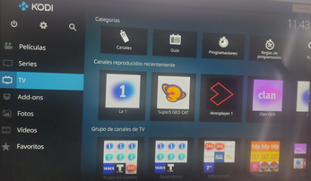
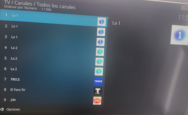

En el menu principal hacemos clic en el apartado de TV, hay nos apareceran todos los canales disponibles

Hacemos clic en el apartado canales situado en la parte superior. Al hacerlo nos aparecera la lista de todos los canales disponibles para ver
Seleccionamos el canal que deseamos ver y al pulsarlo comenzara la reproduccion en directo